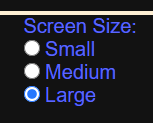
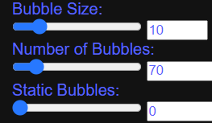

Hello and welcome to the COVID collision simulation. Our company has put in the effort to create a simulation that demonstrates how COVID-19 spreads. It's important to raise awareness of the effects of social distancing and show how dangerous it can be if you're not social distancing.
Before using our simulation please login first. The simulation has blue, healthy bubbles and red, sick bubbles. Some bubbles may move, some may stay still but it's up to you to change the speed, size and number of bubbles. See for yourself how COVID-19 spreads.
The simulation is designed to help government official take the appropriate actions that helps ensure our safety. That doesn't stop anyone else from seeing this website. Everyone is free to visit our website so please share this site with your friends and family. Wash your hands, social distance and be safe!
To gain access to our simulation, you must first login at the top right of your screen. An email and password is required.
All passwords require a minimum of 8 characters and require at least 1 number.
When you first get on the simulation you have the option of changing the size of the simulation. You're given 3 options of small, medium and large. Small is 300 pixels tall and 60% of the screen width. Medium is 400 pixels tall and 80% of the screen width. Large is 500 pixels tall and 90% of the screen width.
All controls for the bubbles have a slider and a box. You can drag the slider to the left to decrease or drag to the right whatever it is you're trying to change. If there's a specific number you want and you're having trouble with the slider, then the box next to it allows you to directly input the number you want. You're allowed to control the size of the bubbles, the number of bubbles, the number of static (non moving) bubbles, starting ratio between sick and healthy, as well as the speed of the bubbles.
The simulator keeps track of the number of sick bubbles and time, both located above the simulation. Press the button in the bottom right corner of the controls labelled "start" to start the simulation. If it any point you wish to stop, press the button again. Changing any of the controls while the simulation is running automatically stops the simulation and will not take effect until the start button is hit. If it any point the simulation begins slowing down try refreshing the page. This should solve the issue and you don't have to worry about being logged out.